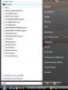
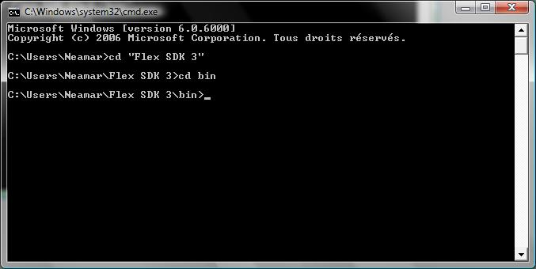
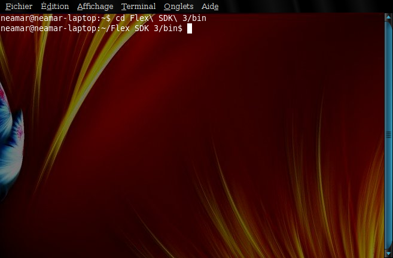
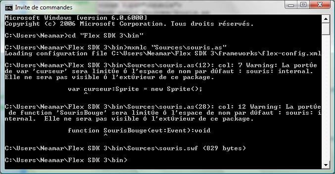

Bonjour amis Zéros ! Dans ce tutoriel, nous allons parler de Flash...
Dans quels cas ce logiciel me sera utile ?
Vous avez Windows et l'IDE d'Adobe, mais la version de démonstration touche à sa fin et vous ne souhaitez pas débourser 800 euros pour continuer à programmer ?
Vous avez Linux et vous aimeriez bien pouvoir développer en AS3 (ActionScript 3) ?
Et surtout, vous ne voulez pas pirater un logiciel, quel qu'il soit ! J'espère bien que ce n'est pas votre genre... :colere2:
Même si l'IDE d'Adobe est payant (et beaucoup trop cher pour un particulier comme vous et moi), il existe un logiciel gratuit appelé Flex SDK, développé par Macromedia (l'ancien possesseur de Flash, racheté depuis par Adobe), qui possède un compilateur AS3 performant (en fait, c'est le compilateur standard pour l'AS3 ;) ).
Dans ce tutorial, nous n'allons pas nous intéresser aux capacités de Flex SDK, mais uniquement à son compilateur. Pour commencer, il va donc falloir télécharger ce compilateur dont je vous parle depuis dix minutes... Vous le trouverez ici :
The Adobe® Flex? 3 Software Development Kit (SDK) includes the Flex framework (component class library) and Flex compiler, enabling you to freely develop and deploy Flex applications using an IDE of your choice.
Une fois téléchargé, décompressez le tout dans un dossier quelconque... et voilà, vous en avez fini avec l'installation ! Vous avouerez que ce n'était pas très compliqué... la mauvaise nouvelle, c'est que ça ne va pas tarder à le devenir (compliqué, vous me suivez ?) !
Vous êtes maintenant en possession d'un superbe compilateur tout beau tout neuf, mais vous ne savez pas comment l'utiliser ! :lol: Pas de chance, je n'en ai aucune idée, moi non plus. Ce compilateur s'utilise en ligne de commande. Non, non ! Ne partez pas tout de suite... Les vieux de la vieille de Windows se souviennent sûrement de la console. Il va y avoir des retrouvailles émues ! Quant à ceux qui utilisent Linux, les présentations ne s'imposent même pas, je crois !
Sous Win Me / XP : un clic sur démarrer, puis un clic sur Exécuter, vous écrivez cmd. Welcome back to the old world :-° !
Sous Windows Me / 98 / 95 : lancez le fichier command.com.
Sous Windows Vista : cliquez sur démarrer, puis entrez directement cmd dans la barre de recherche. (cliquez pour agrandir)
Astuce : sur toutes les versions de Windows, vous pouvez aussi utiliser la combinaison de touches Windows + R, et écrire cmd.
Sous Linux : comment ça ? Vous utilisez Linux et vous ne savez pas ouvrir une console ? Allez, zou ! c'est par ici...
Vous avez maintenant devant vous une superbe console :-° ... il va falloir se déplacer jusqu'au dossier bin du dossier que vous venez de télécharger. Pour cela, il faut utiliser la commande cd ("Change Directory"), qui permet de se déplacer dans l'arborescence du disque dur. Dans mon cas, le dossier se situe presque à la racine...

Windows

Linux
En résumé, vous disposez maintenant d'un compilateur prêt à fonctionner... alors, qu'est-ce qu'on attend pour continuer ?
Pour cette partie, nous allons utiliser un fichier .as de test. Il n'a qu'une seule utilité : servir de test. Afin que tout le monde soit d'accord, je vous donne ce fichier pour que vous puissiez faire des tests. N'essayez pas encore de compiler un de vos anciens codes-source réalisés avec l'IDE ! Le nombre d'erreurs vous ferait pleurer, on en reparlera dans la prochaine sous-partie !
package
{
//Ne vous occupez pas de cette partie, je détaillerai plus tard
import flash.ui.Mouse;
import flash.display.Sprite;
import flash.events.MouseEvent;
import flash.events.Event;
//Le code
public class souris extends Sprite
{
var curseur:Sprite = new Sprite();
function souris():void
{
var Map:Array = new Array();
var niveau:Sprite = new Sprite();
niveau.graphics.beginFill(0xFF0000,0.5);
niveau.graphics.drawRect(0,0,640,480);
stage.addChild(niveau);
niveau.addEventListener(MouseEvent.MOUSE_MOVE,SourisBouge);
curseur.graphics.beginFill(0x00FF00,0.5);
curseur.graphics.drawRect(0,0,20,20);
niveau.addChild(curseur);
}
function SourisBouge(evt:Event):void
{//Quand la souris bouge, déplacer curseur
curseur.x=mouseX-10;
curseur.y=mouseY-10;
}
}
}
Enregistrez ce fichier (nommez-le souris.as) dans un dossier Sources du répertoire bin. Le but de ce code est très simple : créer un fond rougeâtre, et un carré vert qui suit la souris. Ne vous attardez pas sur le code, qui diffère sûrement de ce que vous connaissez dans votre IDE : on reparlera de tout ça plus tard !
Dans votre console, insérez la ligne suivante :
mxmlc "Sources/souris.as"
Sous Linux, vous aurez besoin de rajouter bash, et d'enlever les guillemets :
bash mxmlc Sources/souris.as
Appuyez sur Entrée... :magicien:

Regardez dans votre dossier Source : un fichier souris.swf s'est créé ! Miracle :soleil: ! Vous pouvez le lancer : il réagira comme n'importe quel .swf, mis à part que vous n'avez pas déboursé 800 euros !
L'étape suivante ne sera pas forcément la plus drôle : je vous expliquerai comment modifier vos anciens codes pour les rendre compatibles avec ce compilateur. Même si aucune modification de fond n'est nécessaire (mis à part quelques rares cas, comme les interpolations complexes), cette tâche ne sera pas forcément amusante, voire même particulièrement emmerdbêtante ! Mais pas de souci ! Je reste ici pour vous expliquer :lol: !
Commençons par les choses simples : toutes vos instructions doivent se terminer par un point-virgule. Il n'est pas vraiment obligatoire (sauf si vous mettez plusieurs instructions sur la même ligne), mais il indique au compilateur où sont les fins de ligne, et il clarifie la lecture de votre code. Bref, prenez l'habitude de le mettre, ça ne coute pas grand chose !
2. Le typage
Cette opération est primordiale quel que soit le langage utilisé, mais l'IDE d'Adobe est assez laxiste sur ce point.
Typage : à quoi ça sert ?
Le typage, qu'est-ce que c'est ? Cela consiste tout simplement à donner un type à une variable. Par exemple, c'est dire "Toi, tu es une variable qui contient forcément un chiffre, je vais donc indiquer à l'ordinateur que tu n'es autorisée à ne recevoir que des chiffres". À première vue, ça peut paraître inutile et évident. Détrompez-vous ! Le typage évite beaucoup d'erreurs. Ainsi, si vous essayez de mettre une chaîne de caractères dans une variable numérique, le compilateur vous en avertira, alors que sans typage, la compilation s'effectuerait sans problème. Sauf que quand vous lancerez le fichier, l'ordinateur pourra être appelé à faire des calculs bizarres, comme sinus(2*"Bonjour"+3.1415). Personnellement, je ne sais pas faire ce type de calcul... :p Le problème, c'est que l'ordinateur non plus n'en a aucune idée : il y aura donc erreur, et bugs sur tous les appels de cette variable, ou de cette fonction. Pas cool !
En plus, en typant vos variables, l'ordinateur sait dès le début que telle variable ne contiendra que des chiffres : il n'aura donc pas besoin de faire des changements de type complexes ! C'est tout bénéf' pour la rapidité / propreté de votre code.
Enfin, quand vous commencerez à manier des types plus complexes et assez abstraits, tels que Function, Class, Dictionary, ou tout simplement vos propres classes, vous serez heureux que le compilateur vous indique les appels de méthodes ou de propriétés inexistantes.
Vous devez typer vos variables, mais aussi vos fonctions. Pour les variables, cela implique qu'il faut aussi les déclarer ! Quelques exemples de typage de variables :
//Exemples corrects :
var MonString:String="Tuto"; //Une chaîne de caractère
var niveau:Sprite = new Sprite(); //Un type un peu plus complexe : le sprite
var MonString2:String="126"; //Le nombre est entouré de guillemets : il est donc considéré comme une chaîne de caractères
//Exemples incorrects :
var MonNombre:int="Tot"; //le compilateur renverra : C:\Users\Neamar\Flex SDK 3\bin\Sources\souris.as(18): col: 25 Error: Contrainte implicite d'une valeur du type int vers un type sans rapport String.
var MonString:String=126; //Une chaîne de caractères
Il y a une multitude de types : Array, MovieClip, Point, Line... j'en passe, regardez la documentation AS3 !
En plus des variables, vous devez aussi typer vos fonctions ! Dès que vous utilisez l'instruction return, votre fonction a un type : celui de la variable retournée ! Le type s'indique de la même façon que pour les variables : "Nom_De_La_Fonction(parametre:type_parametre):[type]". Si une fonction ne renvoie rien (on parle alors de procédure), vous devez quand même la typer : puisque votre fonction ne renvoie rien, elle sera de type void, ce qui signifie néant en anglais.
Des exemples ?
function SourisBouge(evt:MouseEvent):void //Pas de return : on marque donc void
{
//La suite de la fonction
}
function Addition(nb1:uint,nb2:uint):uint //Les paramètres aussi doivent êtres signés
{
return nb1+nb2; //L'addition de deux nombres donne un nombre : on peut donc utiliser uint
}
3. Les packages
Voilà le point qui fâche... Qu'est-ce qu'un package ? Il s'agit d'un ensemble de fichiers qui contiennent les définitions de certaines fonctions.
Lorsque vous compilez manuellement, vous devez inclure les packages que vous utilisez. Regardez le code de souris.as :
package
{
import flash.ui.Mouse;
import flash.display.Sprite;
import flash.events.MouseEvent;
import flash.events.Event;
public class souris extends Sprite
{
[...]
}
}
Je vais donc vous parler de ces import. En soi, rien de bien complexe : si vous utilisez des évènements de la souris (MouseEvent.MOUSE_MOVE, par exemple), vous devez inclure flash.events.MouseEvent. Si vous utilisez des Sprite, vous devrez marquer importflash.display.Sprite... et ainsi de suite.
Mais... comment je fais pour trouver le bon package ?
A priori, ce n'est pas compliqué, le seul problème étant de trouver le package quand l'instruction n'a pas un nom en rapport. Une petite étude de cas ?
Citation : Vous
Je veux cacher mon curseur de souris avec la méthode hide(). Quand je compile, j'obtiens une erreur : j'ai donc besoin d'inclure un package... mais lequel ? Après avoir farfouillé dans l'aide de Flash, je découvre une catégorie Mouse qui semble intéressante. Encore deux-trois liens, et hop ! flash.ui.Mouse. C'est exactement ce qu'il me fallait ! Je n'ai plus qu'à inclure le package...
Comme vous le voyez, ça reste très artisanal : l'aide de Flash sera indispensable dans votre recherche de packages.
4. Les formes
Quand vous utilisiez l'IDE, vous avez sûrement pris l'habitude d'utiliser en permanence l'outil de dessin vectoriel. Dans ce cas-là, j'ai deux nouvelles pour vous : une bonne et une mauvaise. Je commence par laquelle ? Allez, la mauvaise ! La mauvaise nouvelle, c'est que cette option n'est pas disponible avec ce compilateur. Il vous sera donc impossible de redessiner vos superbes vaguelettes à la souris... La bonne nouvelle, c'est que tout n'est pas perdu ! Regardez le code-source de souris.as :
Comme vous voyez, ce que vous faisiez à la main est faisable en code ! Fini le WYSIWYG, bienvenue au code ! Vous apprendrez à connaitres les fonctions de la classe Graphics...
5. La TimeLine
Je crains d'avoir encore une mauvaise nouvelle à vous annoncer ! Malgré de nombreuses recherches, je n'ai pas trouvé comment créer une frame en code. Et il semble admis sur les forums que les frames n'existent pas dans Flex. Bilan : vous allez devoir faire une croix sur cette Timeline. Attendez ! Ne partez pas... réfléchissons ensemble : quel est l'intérêt de ces frames ?
Les animations de début // de fin => Faux ! Maintenant que vous réalisez toutes vos animations en code, ces anims seront incorporées dans votre code-source. Pas d'accès aux clips, donc pas besoin de frames !
Les preloaders => Là, vous marquez un point ! Effectivement, Flash attend normalement que la première frame soit chargée pour afficher le .swf. Si vous n'avez qu'une seule frame, il vous sera donc impossible de réaliser une petite barre de chargement. Malheureusement, il n'y a pas de solutions simples à ce problème. Vous pouvez le contourner en utilisant un LoaderFlash qui chargera votre .swf complet, ou vous pouvez utiliser la méthode décrite ici (en anglais, et demande un certain niveau de compétence ! Entraînez-vous un peu avant d'aller voir ça). Une troisième solution existe, avec les classes tween. Je ne m'attarde pas là-dessus, car je n'en sais pas beaucoup plus.
Citation : L'aide de Flash
"vous obtiendrez des performances nettement supérieures en utilisant Shape plutôt que Sprite ou MovieClip"
Si vous avez besoin d'un objet qui sera le conteneur d'autres objets d'affichage (que vous ayez ou non l'intention de dessiner en ActionScript dans cet objet), choisissez l'une des sous-classes de DisplayObjectContainer :
* Sprite si l'objet doit être créé en ActionScript uniquement, ou servira de classe de base à un objet d'affichage qui sera uniquement créé et manipulé en ActionScript, * MovieClip si vous créez une variable pour pointer sur un symbole de clip créé dans Flash.
Ça y est, vos anciens codes-source devraient se compiler. Ah non ! Il vous manque encore une notion...
6. Enchâssez-moi tout ça !
Votre code-source doit être contenu dans une classe. Voilà donc la structure standard d'un fichier .as :
package
{
//les importations de package
public class [NOM_DU_PROGRAMME] extends Sprite
{
//Variables publiques
function [NOM_DU_PROGRAMME]():void
{
//Le constructeur principal, qui est appelé au démarrage du programme. En simplifiant, on pourrait dire qu'il est l'équivalent de la fonction main en C/C++
}
function MaFonction1(Parametre1:Type,Parametre2:Type):Type
{
//Les fonctions annexes
}
}
}
Le mot clé extends indique que la classe hérite de Sprite. Par défaut, AS3 n'as pas d'héritage multiple, en revanche, vous pouvez utiliser Implements pour simuler le comportement voulu.
Mais... C'est moche ! Toutes les fonctions dans le même fichier ? Ça va être un sacré bordel !
Qui a dit que vous deviez tout mettre dans le même fichier ? Ah oui ! Moi :-° ... oubliez ça, alors ! Vous pouvez parfaitement créer des fichiers annexes qui contiennent des fonctions. Ainsi, rien ne vous empêche de créer un fichier Evenements.as, un Graphisme.as , un Calculs.as... Une fois créés, vous pouvez les inclure très facilement, en utilisant la fonction include dans la fonction de départ.
public class Editeur extends Sprite {
function Editeur():void {
include "Trace.as";
include "Place.as"
Place_Cible = DeleteCursor
include "Editeur_Graphics.as";
include "HitTesteur.as";
var i:uint,j:uint;
...
Et n'oubliez pas non plus qu'ActionScript est un langage orienté objet, et qu'en conséquent, vos classes devraient rarement dépasser les 300 lignes. Si il y a plus de lignes, faites plus de classes !
Je ne m'attarde pas sur les package : ils ne sont pas très importants pour les petites applications, et embrouillent l'esprit si on les présente trop tôt. Si un jour vous ressentez le besoin de trier vos classes (parce que vous en avez quarante, par exemple), vous pourrez chercher à en savoir plus !
Ça y est ! Vous en avez fini avec cette sous-partie assez longue, je dois l'avouer ! (Mes doigts fument encore d'avoir tapoté le clavier sans rémission.) Allez courage, plus que quelques lignes et c'est terminé !
Trace, vous connaissez ? Elle permet un débuggage débogage (paraît qu'en français, ça s'écrit comme ça, moi je ne suis pas compliqué :D !), bref, cette fonction permet d'enlever facilement certains bugs de votre application.
Malheureusement, il s'agit d'un des ajouts de l'IDE. Pas d'IDE, pas de Trace !
Pas de panique ! Rien ne vous empêche de recréer une fonction trace Personnellement, j'utilise une classe statique. Dans les précédentes versions de ce tutoriel, je présentais une fonction Trace, mais après réflexion, il me semble plus propre de vous montrer la solution objet, même si elle est légerement plus complexe que dans l'IDE.
Pour l'utiliser, il vous suffit de placer le fichier Trace.as à côté de votre application.
(Je mets le code en secret pour ne pas prendre trop de place.)
/*TRACE - Neamar - 2009
La classe Trace fait partie du package Utilitaires dans mes applications.
Il s'agit d'une classe statique permettant l'affichage d'informations de façon simple, depuis n'importe quelle classe.
Comment l'utiliser ? Depuis votre classe principale, initialiser la classe à l'aide de cette instruction :
Trace.initialiser(this.stage);
qui indique à Trace sur quel stage elle doit afficher les données.
Ensuite, vous pouvez appeler Trace.append() avec un nombre illimité de paramètres de type quelconques.
Exemple :
Trace.append(monTableau.length,new BlurFilter(),"Bonjour")
renverra
"Bonjour"
[object BlurFilter]
2
(les paramètres les plus anciens sont en bas.)
*/
package
{
import flash.display.Sprite;
import flash.display.Stage;
import flash.text.TextField;//Champ de texte. Classe assez vaste, utilisée uniquement pour l'affichage de texte ici. Peut être du texte au format HTML.
import flash.events.Event;
import flash.events.MouseEvent;
public class Trace extends Sprite
{
private static var _stage:Stage;
private static var Container:Sprite = new Sprite();//Le conteneur principal
Container.addEventListener(MouseEvent.MOUSE_DOWN, StartDrag);
Container.scaleX=1;
Container.scaleY=1;
Container.alpha=1;
private static var Texte:TextField=new TextField();
Texte.x = 5;
Texte.y = 5;
Texte.autoSize = "left";
Container.addChild(Texte);
private static var Reduire:Sprite = new Sprite();
Reduire.graphics.beginFill(0xFFFFFF,1);
Reduire.graphics.drawRect(0,0,10,10);
Reduire.addEventListener(MouseEvent.MOUSE_UP, Delete);
Container.addChild(Reduire);
private static var LastTrace:String="";
public function Trace()
{//Constructeur non utilisé.
}
public static function initialiser(vstage:Stage):void
{
_stage=vstage;
_stage.addChild(Container);
}
public static function append(... Parametres):void
{//La fonction principale, qui trace le texte passé en paramètre.
for each(var Parametre:* in Parametres)
{
if(Parametre!=null)
Texte.text = Parametre.toString() + "\r" + Texte.text;//\r indique un retour à la ligne.
else
Texte.text = "null\r" + Texte.text;//\r indique un retour à la ligne.
}
if(_stage)//Seulement si initialisé.
_stage.setChildIndex(Container,_stage.numChildren-1);
else
throw new Error("La classe Trace doit être initialisée avant d'appeler la méthode append");
}
public static function clear():void
{//Efface le contenu du Trace.
Texte.text="";
LastTrace="";
}
//Les fonctions pour déplacer
public static function set draggable(v:Boolean):void
{
if(v)
Container.addEventListener(MouseEvent.MOUSE_DOWN, StartDrag);
else
Container.removeEventListener(MouseEvent.MOUSE_DOWN, StartDrag);
}
private static function StartDrag(e:Event):void
{
Container.startDrag();
Container.addEventListener(MouseEvent.MOUSE_UP, StopDrag);
Container.removeEventListener(MouseEvent.MOUSE_DOWN, StartDrag);
Texte.selectable=false;
}
private static function StopDrag(e:Event):void
{
Container.stopDrag();
Container.removeEventListener(MouseEvent.MOUSE_UP, StopDrag);
Container.addEventListener(MouseEvent.MOUSE_DOWN, StartDrag);
Texte.selectable=true;
}
//Et pour supprimer la boite :
private static function Delete(e:Event):void
{
Container.visible=false;
Reduire.removeEventListener(MouseEvent.MOUSE_UP, Delete);
Container.removeEventListener(MouseEvent.MOUSE_DOWN, StartDrag);
Container.removeEventListener(MouseEvent.MOUSE_UP, StopDrag);
Container=null;
Texte=null;
}
}
}
Ça y est !
Vous savez maintenant comment compiler votre application en AS3 de façon gratuite et multi-plates-formes. Comme vous l'avez remarqué, le plus dur n'est pas la compilation, mais la rectification des problèmes qui sont normalement gérés par l'IDE.
Et n'hésitez pas non plus à commenter ce tutoriel !
Enfin, gardez en tête que les informations affichées ici servent uniquement de base : (c'est un mini-tuto, pas un big tuto !) les informations données sont donc loin d'être exhaustives et couvrent uniquement un usage de base.
Le résultat ? Cela nettoie la console, compile Sources/D-graphe/Dgraphe.as avec une taille de 640x480, active le mode -debug (qui affiche les lignes sur lesquelles les erreurs se produisent avec une pile d'appel détaillé, un outil rapidement indispensable, mais qui double presque le poids des applications !). Enfin, le mode -incremental permet de ne compiler que les classes qui ont changées depuis la dernière compilation. Je considère approximativement que le temps de compilation est réduit par 5 sur un projet aux classes nombreuses.
Au moment de publier une application, n'oubliez pas de remplacer le -debug par -optimize : cela rend la compilation plus longue, mais améliore le poids et la vitesse d'exécution .

{kind=link}